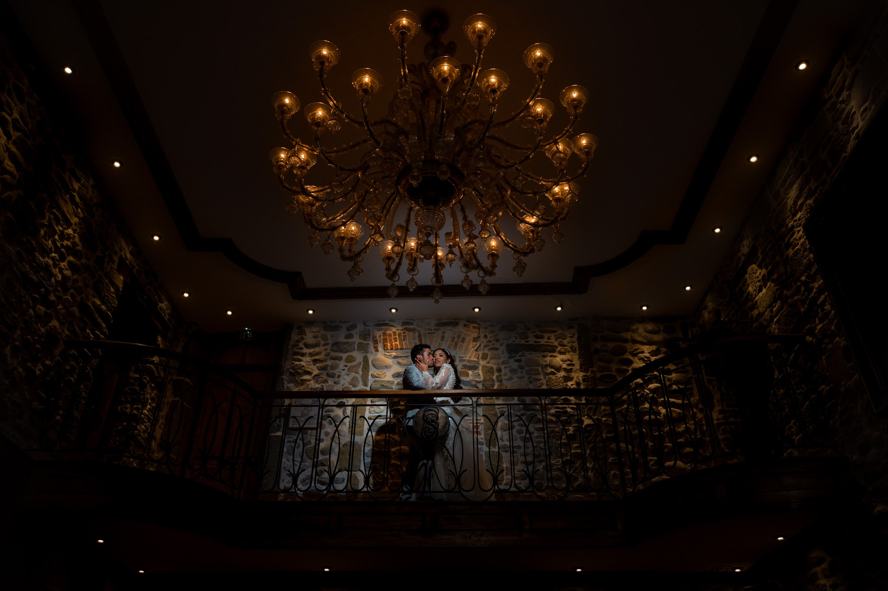

Journal
Conseils, coulisses et retours d’expérience pour préparer votre mariage, votre événement ou votre shooting.

Les plus beaux spots pour une séance photo couple à Lyon
Envie de lumière naturelle et d'émotions vraies ? J'explore avec vous mes lieux favoris pour une séance photo couple à Lyon, de la Presqu'île à Fourvière.
Lire l’article
Votre photographe de mariage oriental à Lyon et en région
Vous préparez un mariage marocain ou algérien dans le Rhône ? Mon approche de photographe pour documenter vos traditions avec élégance et discrétion.
Lire l’articleFilmVidéaste de mariage à Lyon : choisir entre le teaser et le film long
Vous hésitez entre un teaser court et un film long ? Je vous aide à choisir le format vidéo idéal pour garder les meilleurs souvenirs de votre mariage.
Lire l’article
Le premier regard mariage : pourquoi il change toute votre journée
Organiser un premier regard mariage modifie le rythme de votre journée. Ce moment intime apaise la pression et vous laisse du temps pour vos proches.
Lire l’article
Trouver le lieu de mariage idéal à Lyon : châteaux, domaines et lacs
Vous cherchez un domaine ou un château pour votre grand jour ? Mes conseils de photographe pour bien choisir votre lieu de mariage à Lyon et en région.
Lire l’article
Photographe et vidéaste de mariage à Lyon : le guide pour bien choisir
Photographe et vidéaste de mariage à Lyon, en Rhône-Alpes et à l’étranger : style, déroulé de la journée, lieux, films. Le guide pour bien choisir.
Lire l’article
Photographe et vidéaste événementiel à Lyon : séminaires, événements privés et shooting produit
Séminaires, soirées d’entreprise, événements privés, portraits corporate et shooting produit à Lyon et dans le sud-est : photo et vidéo pour votre image.
Lire l’article